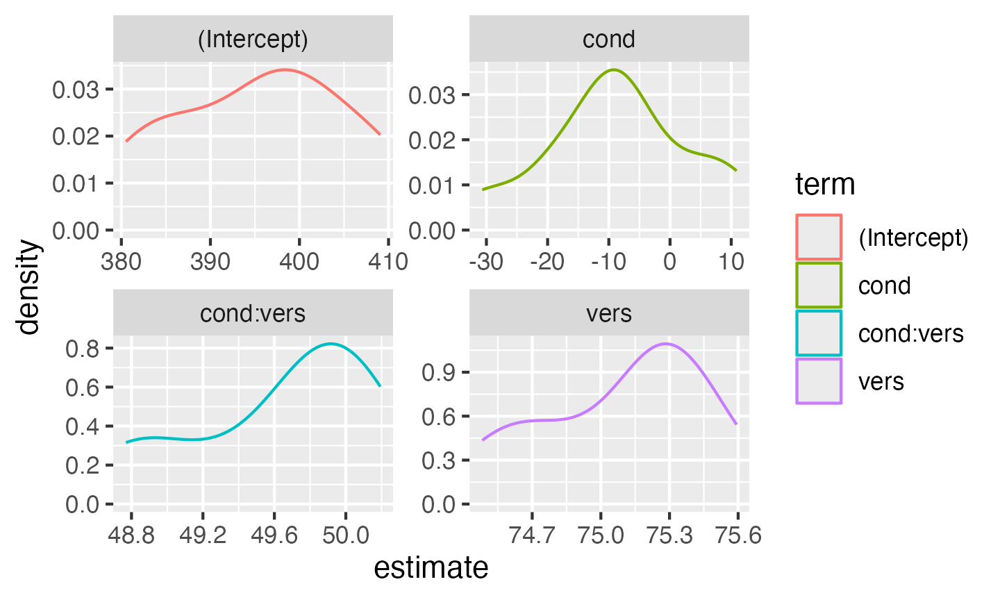

Generate data for a Stroop task where people (subjects)
say the colour of colour words (stimuli) shown in each of
two versions (congruent and incongruent).
Subjects are in one of two conditions (hard or
easy). The dependent variable (DV) is reaction
time.
We expect people to have faster reaction times for congruent stimuli than incongruent stimuli (main effect of version) and to be faster in the easy condition than the hard condition (main effect of condition). We’ll look at some different interaction patterns below.
Simulation
Random Factors
First, set up the overall structure of your data by specifying the number of observations for each random factor. Here, we have a crossed design, so each subject responds to each stimulus. We’ll set the numbers to small numbers as a demo first.
sub_n <- 2 # number of subjects in this simulation
stim_n <- 2 # number of stimuli in this simulation
dat <- add_random(sub = sub_n) |>
add_random(stim = stim_n)
dat
## # A tibble: 4 × 2
## sub stim
## <chr> <chr>
## 1 sub1 stim1
## 2 sub1 stim2
## 3 sub2 stim1
## 4 sub2 stim2Fixed Factors
Next, add the fixed factors. Specify if they vary between one of the random factors and specify the names of the levels.
Each subject is in only one condition, so the code below assigns half
easy and half hard. You can change the
proportion of subjects assigned each level with the .prob
argument.
Stimuli are seen in both congruent and
incongruent versions, so this will double the number of
rows in our resulting data set.
sub_n <- 2 # number of subjects in this simulation
stim_n <- 2 # number of stimuli in this simulation
dat <- add_random(sub = sub_n) |>
add_random(stim = stim_n) |>
add_between(.by = "sub", condition = c("easy","hard")) |>
add_within(version = c("congruent", "incongruent"))
dat
## # A tibble: 8 × 4
## sub stim condition version
## <chr> <chr> <fct> <fct>
## 1 sub1 stim1 easy congruent
## 2 sub1 stim1 easy incongruent
## 3 sub1 stim2 easy congruent
## 4 sub1 stim2 easy incongruent
## 5 sub2 stim1 hard congruent
## 6 sub2 stim1 hard incongruent
## 7 sub2 stim2 hard congruent
## 8 sub2 stim2 hard incongruentContrast Coding
To be able to calculate the dependent variable, you need to recode
categorical variables into numbers. Use the helper function
add_contrast() for this. The code below creates anova-coded
versions of condition and version. Luckily for
us, the factor levels default to a sensible order, with “easy” predicted
to have a faster (lower) reactive time than “hard”, and “congruent”
predicted to have a faster RT than “incongruent”, but we can also
customise the order of levels with add_contrast(); see the
contrasts
vignette for more details.
sub_n <- 2 # number of subjects in this simulation
stim_n <- 2 # number of stimuli in this simulation
dat <- add_random(sub = sub_n) |>
add_random(stim = stim_n) |>
add_between(.by = "sub", condition = c("easy","hard")) |>
add_within(version = c("congruent", "incongruent")) |>
add_contrast("condition") |>
add_contrast("version")
dat
## # A tibble: 8 × 6
## sub stim condition version `condition.hard-easy` version.incongruent-…¹
## <chr> <chr> <fct> <fct> <dbl> <dbl>
## 1 sub1 stim1 easy congruent -0.5 -0.5
## 2 sub1 stim1 easy incongruent -0.5 0.5
## 3 sub1 stim2 easy congruent -0.5 -0.5
## 4 sub1 stim2 easy incongruent -0.5 0.5
## 5 sub2 stim1 hard congruent 0.5 -0.5
## 6 sub2 stim1 hard incongruent 0.5 0.5
## 7 sub2 stim2 hard congruent 0.5 -0.5
## 8 sub2 stim2 hard incongruent 0.5 0.5
## # ℹ abbreviated name: ¹`version.incongruent-congruent`The function defaults to very descriptive names that help you
interpret the fixed factors. Here, “condition.hard-easy” means the main
effect of this factor is interpreted as the RT for hard trials minus the
RT for easy trials, and “version.incongruent-congruent” means the main
effect of this factor is interpreted as the RT for incongruent trials
minus the RT for congruent trials. However, we can change these to
simpler labels with the colnames argument.
Random Effects
Now we specify the random effect structure. We’ll just add random intercepts to start, but will conver random slopes later.
Each subject will have slightly faster or slower reaction times on
average; this is their random intercept (sub_i). We’ll
model it from a normal distribution with a mean of 0 and SD of
100ms.
Each stimulus will have slightly faster or slower reaction times on
average; this is their random intercept (stim_i). We’ll
model it from a normal distribution with a mean of 0 and SD of 50ms (it
seems reasonable to expect less variability between words than people
for this task).
Run this code a few times to see how the random effects change each time. this is because they are sampled from populations.
sub_n <- 2 # number of subjects in this simulation
stim_n <- 2 # number of stimuli in this simulation
sub_sd <- 100 # SD for the subjects' random intercept
stim_sd <- 50 # SD for the stimuli's random intercept
dat <- add_random(sub = sub_n) |>
add_random(stim = stim_n) |>
add_between(.by = "sub", condition = c("easy","hard")) |>
add_within(version = c("congruent", "incongruent")) |>
add_contrast("condition", colnames = "cond") |>
add_contrast("version", colnames = "vers") |>
add_ranef(.by = "sub", sub_i = sub_sd) |>
add_ranef(.by = "stim", stim_i = stim_sd)
dat
## # A tibble: 8 × 8
## sub stim condition version cond vers sub_i stim_i
## <chr> <chr> <fct> <fct> <dbl> <dbl> <dbl> <dbl>
## 1 sub1 stim1 easy congruent -0.5 -0.5 -99.7 -30.9
## 2 sub1 stim1 easy incongruent -0.5 0.5 -99.7 -30.9
## 3 sub1 stim2 easy congruent -0.5 -0.5 -99.7 101.
## 4 sub1 stim2 easy incongruent -0.5 0.5 -99.7 101.
## 5 sub2 stim1 hard congruent 0.5 -0.5 72.2 -30.9
## 6 sub2 stim1 hard incongruent 0.5 0.5 72.2 -30.9
## 7 sub2 stim2 hard congruent 0.5 -0.5 72.2 101.
## 8 sub2 stim2 hard incongruent 0.5 0.5 72.2 101.Error Term
Finally, add an error term. This uses the same
add_ranef() function, just without specifying which random
factor it’s for with .by. In essence, this samples an error
value from a normal distribution with a mean of 0 and the specified SD
for each trial. We’ll also increase the number of subjects and stimuli
to more realistic values now.
sub_n <- 200 # number of subjects in this simulation
stim_n <- 50 # number of stimuli in this simulation
sub_sd <- 100 # SD for the subjects' random intercept
stim_sd <- 50 # SD for the stimuli's random intercept
error_sd <- 25 # residual (error) SD
dat <- add_random(sub = sub_n) |>
add_random(stim = stim_n) |>
add_between(.by = "sub", condition = c("easy","hard")) |>
add_within(version = c("congruent", "incongruent")) |>
add_contrast("condition", colnames = "cond") |>
add_contrast("version", colnames = "vers") |>
add_ranef(.by = "sub", sub_i = sub_sd) |>
add_ranef(.by = "stim", stim_i = stim_sd) |>
add_ranef(err = error_sd)Calculate DV
Now we can calculate the DV by adding together an overall intercept (mean RT for all trials), the subject-specific intercept, the stimulus-specific intercept, and an error term, plus the effect of subject condition, the effect of stimulus version, and the interaction between condition and version.
We set these effects in raw units (ms). So when we set the effect of
subject condition (sub_cond_eff) to 50, that means the
average difference between the easy and hard condition is 50ms.
Easy was coded as -0.5 and hard was coded as
+0.5, which means that trials in the easy condition have -0.5 * 50ms
(i.e., -25ms) added to their reaction time, while trials in the hard
condition have +0.5 * 50ms (i.e., +25ms) added to their reaction
time.
sub_n <- 200 # number of subjects in this simulation
stim_n <- 50 # number of stimuli in this simulation
sub_sd <- 100 # SD for the subjects' random intercept
stim_sd <- 50 # SD for the stimuli's random intercept
error_sd <- 25 # residual (error) SD
grand_i <- 400 # overall mean DV
cond_eff <- 50 # mean difference between conditions: hard - easy
vers_eff <- 50 # mean difference between versions: incongruent - congruent
cond_vers_ixn <- 0 # interaction between version and condition
dat <- add_random(sub = sub_n) |>
add_random(stim = stim_n) |>
add_between(.by = "sub", condition = c("easy","hard")) |>
add_within(version = c("congruent", "incongruent")) |>
add_contrast("condition", colnames = "cond") |>
add_contrast("version", colnames = "vers") |>
add_ranef(.by = "sub", sub_i = sub_sd) |>
add_ranef(.by = "stim", stim_i = stim_sd) |>
add_ranef(err = error_sd) |>
mutate(dv = grand_i + sub_i + stim_i + err +
(cond * cond_eff) +
(vers * vers_eff) +
(cond * vers * cond_vers_ixn) # in this example, this is always 0 and could be omitted
)As always, graph to make sure you’ve simulated the general pattern you expected.
ggplot(dat, aes(condition, dv, color = version)) +
geom_hline(yintercept = grand_i) +
geom_violin(alpha = 0.5) +
stat_summary(fun = mean,
fun.min = \(x){mean(x) - sd(x)},
fun.max = \(x){mean(x) + sd(x)},
position = position_dodge(width = 0.9)) +
scale_color_brewer(palette = "Dark2")Double-check the simulated pattern
Interactions
If you want to simulate an interaction, it can be tricky to figure out what to set the main effects and interaction effect to. It can be easier to think about the simple main effects for each cell. Create four new variables and set them to the deviations from the overall mean you’d expect for each condition (so they should add up to 0). Here, we’re simulating a small effect of version in the hard condition (50ms difference) and double that effect of version in the easy condition (100ms difference).
# set variables to use in calculations below
hard_congr <- -25
hard_incon <- +25
easy_congr <- -50
easy_incon <- +50Use the code below to transform the simple main effects above into main effects and interactions for use in the equations below.
# calculate main effects and interactions from simple effects above
# mean difference between easy and hard conditions
cond_eff <- (hard_congr + hard_incon)/2 -
(easy_congr + easy_incon)/2
# mean difference between incongruent and congruent versions
vers_eff <- (hard_incon + easy_incon)/2 -
(hard_congr + easy_congr)/2
# interaction between version and condition
cond_vers_ixn <- (hard_incon - hard_congr) -
(easy_incon - easy_congr)Then generate the DV the same way we did above, but also add the interaction effect multiplied by the effect-coded subject condition and stimulus version.
dat <- add_random(sub = sub_n) |>
add_random(stim = stim_n) |>
add_between(.by = "sub", condition = c("easy","hard")) |>
add_within(version = c("congruent", "incongruent")) |>
add_contrast("condition", colnames = "cond") |>
add_contrast("version", colnames = "vers") |>
add_ranef(.by = "sub", sub_i = sub_sd) |>
add_ranef(.by = "stim", stim_i = stim_sd) |>
add_ranef(err = error_sd) |>
mutate(dv = grand_i + sub_i + stim_i + err +
(cond * cond_eff) +
(vers * vers_eff) +
(cond * vers * cond_vers_ixn)
)
ggplot(dat, aes(condition, dv, color = version)) +
geom_hline(yintercept = grand_i) +
geom_violin(alpha = 0.5) +
stat_summary(fun = mean,
fun.min = \(x){mean(x) - sd(x)},
fun.max = \(x){mean(x) + sd(x)},
position = position_dodge(width = 0.9)) +
scale_color_brewer(palette = "Dark2")
Double-check the interaction between condition and version
Analysis
New we will run a linear mixed effects model with lmer
and look at the summary.
mod <- lmer(dv ~ cond * vers +
(1 | sub) +
(1 | stim),
data = dat)
mod.sum <- summary(mod)
mod.sum
## Linear mixed model fit by REML. t-tests use Satterthwaite's method [
## lmerModLmerTest]
## Formula: dv ~ cond * vers + (1 | sub) + (1 | stim)
## Data: dat
##
## REML criterion at convergence: 187474
##
## Scaled residuals:
## Min 1Q Median 3Q Max
## -4.154 -0.668 0.000 0.674 4.604
##
## Random effects:
## Groups Name Variance Std.Dev.
## sub (Intercept) 12456 111.6
## stim (Intercept) 2755 52.5
## Residual 628 25.1
## Number of obs: 20000, groups: sub, 200; stim, 50
##
## Fixed effects:
## Estimate Std. Error df t value Pr(>|t|)
## (Intercept) 401.417 10.836 168.863 37.05 <2e-16 ***
## cond 9.554 15.788 198.001 0.61 0.55
## vers 74.834 0.354 19749.000 211.16 <2e-16 ***
## cond:vers -50.516 0.709 19749.000 -71.27 <2e-16 ***
## ---
## Signif. codes: 0 '***' 0.001 '**' 0.01 '*' 0.05 '.' 0.1 ' ' 1
##
## Correlation of Fixed Effects:
## (Intr) cond vers
## cond 0.000
## vers 0.000 0.000
## cond:vers 0.000 0.000 0.000Sense checks
First, check that your groups make sense.
- The number of obs should be the total number of trials analysed.
-
subshould be what we setsub_nto above. -
stimshould be what we setstim_nto above.
mod.sum$ngrps |>
as_tibble(rownames = "Random.Fator") |>
mutate(parameters = c(sub_n, stim_n))
## # A tibble: 2 × 3
## Random.Fator value parameters
## <chr> <dbl> <dbl>
## 1 sub 200 200
## 2 stim 50 50Next, look at the random effects.
- The SD for
subshould be nearsub_sd. - The SD for
stimshould be nearstim_sd. - The residual SD should be near
error_sd.
mod.sum$varcor |>
as_tibble() |>
select(Groups = grp, Name = var1, "Std.Dev." = sdcor) |>
mutate(parameters = c(sub_sd, stim_sd, error_sd))
## # A tibble: 3 × 4
## Groups Name Std.Dev. parameters
## <chr> <chr> <dbl> <dbl>
## 1 sub (Intercept) 112. 100
## 2 stim (Intercept) 52.5 50
## 3 Residual NA 25.1 25Finally, look at the fixed effects.
- The estimate for the Intercept should be near the
grand_i. - The main effect of
condshould be near what we calculated forcond_eff. - The main effect of
versshould be near what we calculated forvers_eff. - The interaction between
cond:versshould be near what we calculated forcond_vers_ixn.
mod.sum$coefficients |>
as_tibble(rownames = "Effect") |>
select(Effect, Estimate) |>
mutate(parameters = c(grand_i, cond_eff, vers_eff, cond_vers_ixn))
## # A tibble: 4 × 3
## Effect Estimate parameters
## <chr> <dbl> <dbl>
## 1 (Intercept) 401. 400
## 2 cond 9.55 0
## 3 vers 74.8 75
## 4 cond:vers -50.5 -50Random effects
Plot the subject intercepts from our code above
(dat$sub_i) against the subject intercepts calculated by
lmer (ranef(mod)$sub_id).
# get simulated random intercept for each subject
sub_sim <- dat |>
group_by(sub, sub_i) |>
summarise(.groups = "drop")
# join to calculated random intercept from model
sub_sim_mod <- ranef(mod)$sub |>
as_tibble(rownames = "sub") |>
rename(mod_sub_i = `(Intercept)`) |>
left_join(sub_sim, by = "sub")
# plot to check correspondence
sub_sim_mod |>
ggplot(aes(sub_i,mod_sub_i)) +
geom_point() +
geom_smooth(method = "lm", formula = y~x) +
xlab("Simulated random intercepts (sub_i)") +
ylab("Modeled random intercepts")Compare simulated subject random intercepts to those from the model
Plot the stimulus intercepts from our code above
(dat$stim_i) against the stimulus intercepts calculated by
lmer (ranef(mod)$stim_id).
# get simulated random intercept for each stimulus
stim_sim <- dat |>
group_by(stim, stim_i) |>
summarise(.groups = "drop")
# join to calculated random intercept from model
stim_sim_mod <- ranef(mod)$stim |>
as_tibble(rownames = "stim") |>
rename(mod_stim_i = `(Intercept)`) |>
left_join(stim_sim, by = "stim")
# plot to check correspondence
stim_sim_mod |>
ggplot(aes(stim_i,mod_stim_i)) +
geom_point() +
geom_smooth(method = "lm", formula = y~x) +
xlab("Simulated random intercepts (stim_i)") +
ylab("Modeled random intercepts")Compare simulated stimulus random intercepts to those from the model
Function
You can put the code above in a function so you can run it more easily and change the parameters. I removed the plot and set the argument defaults to the same as the example above with all fixed effects set to 0, but you can set them to other patterns.
sim_lmer <- function( sub_n = 200,
stim_n = 50,
sub_sd = 100,
stim_sd = 50,
error_sd = 25,
grand_i = 400,
cond_eff = 0,
vers_eff = 0,
cond_vers_ixn = 0) {
dat <- add_random(sub = sub_n) |>
add_random(stim = stim_n) |>
add_between(.by = "sub", condition = c("easy","hard")) |>
add_within(version = c("congruent", "incongruent")) |>
add_contrast("condition", colnames = "cond") |>
add_contrast("version", colnames = "vers") |>
add_ranef(.by = "sub", sub_i = sub_sd) |>
add_ranef(.by = "stim", stim_i = stim_sd) |>
add_ranef(err = error_sd) |>
mutate(dv = grand_i + sub_i + stim_i + err +
(cond * cond_eff) +
(vers * vers_eff) +
(cond * vers * cond_vers_ixn)
)
mod <- lmer(dv ~ cond * vers +
(1 | sub) +
(1 | stim),
data = dat)
return(mod)
}Run the function with the default values (so all fixed effects set to 0).
sim_lmer() %>% summary()
## Warning in checkConv(attr(opt, "derivs"), opt$par, ctrl = control$checkConv, :
## Model failed to converge with max|grad| = 0.00216013 (tol = 0.002, component 1)
## Linear mixed model fit by REML. t-tests use Satterthwaite's method [
## lmerModLmerTest]
## Formula: dv ~ cond * vers + (1 | sub) + (1 | stim)
## Data: dat
##
## REML criterion at convergence: 187222
##
## Scaled residuals:
## Min 1Q Median 3Q Max
## -4.191 -0.666 0.005 0.671 3.958
##
## Random effects:
## Groups Name Variance Std.Dev.
## sub (Intercept) 11254 106.1
## stim (Intercept) 3062 55.3
## Residual 620 24.9
## Number of obs: 20000, groups: sub, 200; stim, 50
##
## Fixed effects:
## Estimate Std. Error df t value Pr(>|t|)
## (Intercept) 399.955 10.842 149.164 36.89 <2e-16 ***
## cond 14.384 15.007 198.045 0.96 0.34
## vers -0.111 0.352 19748.984 -0.31 0.75
## cond:vers 0.817 0.705 19748.984 1.16 0.25
## ---
## Signif. codes: 0 '***' 0.001 '**' 0.01 '*' 0.05 '.' 0.1 ' ' 1
##
## Correlation of Fixed Effects:
## (Intr) cond vers
## cond 0.000
## vers 0.000 0.000
## cond:vers 0.000 0.000 0.000
## optimizer (nloptwrap) convergence code: 0 (OK)
## Model failed to converge with max|grad| = 0.00216013 (tol = 0.002, component 1)Try changing some variables to simulate different patterns of fixed effects.
sim_lmer(cond_eff = 0,
vers_eff = 75,
cond_vers_ixn = -50) %>%
summary()
## Linear mixed model fit by REML. t-tests use Satterthwaite's method [
## lmerModLmerTest]
## Formula: dv ~ cond * vers + (1 | sub) + (1 | stim)
## Data: dat
##
## REML criterion at convergence: 187381
##
## Scaled residuals:
## Min 1Q Median 3Q Max
## -4.761 -0.674 -0.007 0.665 3.875
##
## Random effects:
## Groups Name Variance Std.Dev.
## sub (Intercept) 9410 97.0
## stim (Intercept) 2260 47.5
## Residual 627 25.0
## Number of obs: 20000, groups: sub, 200; stim, 50
##
## Fixed effects:
## Estimate Std. Error df t value Pr(>|t|)
## (Intercept) 396.707 9.606 160.847 41.30 <2e-16 ***
## cond -9.966 13.723 198.000 -0.73 0.47
## vers 75.323 0.354 19749.000 212.69 <2e-16 ***
## cond:vers -49.997 0.708 19749.000 -70.59 <2e-16 ***
## ---
## Signif. codes: 0 '***' 0.001 '**' 0.01 '*' 0.05 '.' 0.1 ' ' 1
##
## Correlation of Fixed Effects:
## (Intr) cond vers
## cond 0.000
## vers 0.000 0.000
## cond:vers 0.000 0.000 0.000Power analysis
First, wrap your simulation function inside of another function that
takes the argument of a replication number, runs a simulated analysis,
and returns a data table of the fixed and random effects (made with
broom.mixed::tidy()). You can use purrr’s
map_df() function to create a data table of results from
multiple replications of this function. We’re only running 10
replications here in the interests of time, but you’ll want to run 100
or more for a proper power calculation.
sim_lmer_pwr <- function(rep) {
s <- sim_lmer(cond_eff = 0,
vers_eff = 75,
cond_vers_ixn = 50)
# put just the fixed effects into a data table
broom.mixed::tidy(s, "fixed") %>%
mutate(rep = rep) # add a column for which rep
}
my_power <- map_df(1:10, sim_lmer_pwr)You can then plot the distribution of estimates across your simulations.
ggplot(my_power, aes(estimate, color = term)) +
geom_density() +
facet_wrap(~term, scales = "free")
You can also just calculate power as the proportion of p-values less than your alpha.
Random slopes
In the example so far we’ve ignored random variation among subjects or stimuli in the size of the fixed effects (i.e., random slopes).
First, let’s reset the parameters we set above.
sub_n <- 200 # number of subjects in this simulation
stim_n <- 50 # number of stimuli in this simulation
sub_sd <- 100 # SD for the subjects' random intercept
stim_sd <- 50 # SD for the stimuli's random intercept
error_sd <- 25 # residual (error) SD
grand_i <- 400 # overall mean DV
cond_eff <- 50 # mean difference between conditions: hard - easy
vers_eff <- 50 # mean difference between versions: incongruent - congruent
cond_vers_ixn <- 0 # interaction between version and conditionSlopes
In addition to generating a random intercept for each subject, now we
will also generate a random slope for any within-subject factors. The
only within-subject factor in this design is version. The
main effect of version is set to 50 above, but different
subjects will show variation in the size of this effect. That’s what the
random slope captures. We’ll set sub_vers_sd below to the
SD of this variation and use this to calculate the random slope
(sub_version_slope) for each subject.
Also, it’s likely that the variation between subjects in the size of
the effect of version is related in some way to between-subject
variation in the intercept. So we want the random intercept and slope to
be correlated. Here, we’ll simulate a case where subjects who have
slower (larger) reaction times across the board show a smaller effect of
condition, so we set sub_i_vers_cor below to a negative
number (-0.2).
We just have to edit the first add_ranef() to add two
variables (sub_i, sub_vers_slope) that are
correlated with r = -0.2, means of 0, and SDs equal to what we set
sub_sd above and sub_vers_sd below.
sub_vers_sd <- 20
sub_i_vers_cor <- -0.2
dat <- add_random(sub = sub_n) |>
add_random(stim = stim_n) |>
add_between(.by = "sub", condition = c("easy","hard")) |>
add_within(version = c("congruent", "incongruent")) |>
add_contrast("condition", colnames = "cond") |>
add_contrast("version", colnames = "vers") |>
add_ranef(.by = "sub", sub_i = sub_sd,
sub_vers_slope = sub_vers_sd,
.cors = sub_i_vers_cor)Correlated Slopes
In addition to generating a random intercept for each stimulus, we
will also generate a random slope for any within-stimulus factors. Both
version and condition are within-stimulus
factors (i.e., all stimuli are seen in both congruent and
incongruent versions and both easy and
hard conditions). So the main effects of version and
condition (and their interaction) will vary depending on the
stimulus.
They will also be correlated, but in a more complex way than above. You need to set the correlations for all pairs of slopes and intercept. Let’s set the correlation between the random intercept and each of the slopes to -0.4 and the slopes all correlate with each other +0.2 (You could set each of the six correlations separately if you want, though).
stim_vers_sd <- 10 # SD for the stimuli's random slope for stim_version
stim_cond_sd <- 30 # SD for the stimuli's random slope for sub_cond
stim_cond_vers_sd <- 15 # SD for the stimuli's random slope for sub_cond:stim_version
stim_i_cor <- -0.4 # correlations between intercept and slopes
stim_s_cor <- +0.2 # correlations among slopes
# specify correlations for rnorm_multi (one of several methods)
stim_cors <- c(stim_i_cor, stim_i_cor, stim_i_cor,
stim_s_cor, stim_s_cor,
stim_s_cor)
dat <- add_random(sub = sub_n) |>
add_random(stim = stim_n) |>
add_between(.by = "sub", condition = c("easy","hard")) |>
add_within(version = c("congruent", "incongruent")) |>
add_contrast("condition", colnames = "cond") |>
add_contrast("version", colnames = "vers") |>
add_ranef(.by = "sub", sub_i = sub_sd,
sub_vers_slope = sub_vers_sd,
.cors = sub_i_vers_cor) |>
add_ranef(.by = "stim", stim_i = stim_sd,
stim_vers_slope = stim_vers_sd,
stim_cond_slope = stim_cond_sd,
stim_cond_vers_slope = stim_cond_vers_sd,
.cors = stim_cors)Calculate DV
Now we can calculate the DV by adding together an overall intercept (mean RT for all trials), the subject-specific intercept, the stimulus-specific intercept, the effect of subject condition, the stimulus-specific slope for condition, the effect of stimulus version, the stimulus-specific slope for version, the subject-specific slope for condition, the interaction between condition and version (set to 0 for this example), the stimulus-specific slope for the interaction between condition and version, and an error term.
dat <- add_random(sub = sub_n) |>
add_random(stim = stim_n) |>
add_between(.by = "sub", condition = c("easy","hard")) |>
add_within(version = c("congruent", "incongruent")) |>
add_contrast("condition", colnames = "cond") |>
add_contrast("version", colnames = "vers") |>
add_ranef(.by = "sub", sub_i = sub_sd,
sub_vers_slope = sub_vers_sd,
.cors = sub_i_vers_cor) |>
add_ranef(.by = "stim", stim_i = stim_sd,
stim_vers_slope = stim_vers_sd,
stim_cond_slope = stim_cond_sd,
stim_cond_vers_slope = stim_cond_vers_sd,
.cors = stim_cors) |>
add_ranef(err = error_sd) |>
mutate(
trial_cond_eff = cond_eff + stim_cond_slope,
trial_vers_eff = vers_eff + sub_vers_slope + stim_vers_slope,
trial_cond_vers_ixn = cond_vers_ixn + stim_cond_vers_slope,
dv = grand_i + sub_i + stim_i + err +
(cond * trial_cond_eff) +
(vers * trial_vers_eff) +
(cond * vers * trial_cond_vers_ixn)
)As always, graph to make sure you’ve simulated the general pattern you expected.
ggplot(dat, aes(condition, dv, color = version)) +
geom_hline(yintercept = grand_i) +
geom_violin(alpha = 0.5) +
stat_summary(fun = mean,
fun.min = \(x){mean(x) - sd(x)},
fun.max = \(x){mean(x) + sd(x)},
position = position_dodge(width = 0.9)) +
scale_color_brewer(palette = "Dark2")
Double-check the simulated pattern
Analysis
New we’ll run a linear mixed effects model with lmer and
look at the summary. You specify random slopes by adding the
within-level effects to the random intercept specifications. Since the
only within-subject factor is version, the random effects specification
for subjects is (1 + vers | sub). Since both condition and
version are within-stimuli factors, the random effects specification for
stimuli is (1 + vers*cond | stim).
This model will take a lot longer to run than one without random slopes specified. This might be a good time for a coffee break.
mod <- lmer(dv ~ cond * vers +
(1 + vers || sub) +
(1 + vers*cond || stim),
data = dat)
mod.sum <- summary(mod)
mod.sum
## Linear mixed model fit by REML. t-tests use Satterthwaite's method [
## lmerModLmerTest]
## Formula: dv ~ cond * vers + (1 + vers || sub) + (1 + vers * cond || stim)
## Data: dat
##
## REML criterion at convergence: 188362
##
## Scaled residuals:
## Min 1Q Median 3Q Max
## -3.713 -0.672 0.003 0.667 3.928
##
## Random effects:
## Groups Name Variance Std.Dev.
## sub (Intercept) 9969.0 99.84
## sub.1 vers 369.5 19.22
## stim (Intercept) 4056.8 63.69
## stim.1 vers 81.7 9.04
## stim.2 cond 1099.1 33.15
## stim.3 vers:cond 225.7 15.02
## Residual 623.8 24.98
## Number of obs: 20000, groups: sub, 200; stim, 50
##
## Fixed effects:
## Estimate Std. Error df t value Pr(>|t|)
## (Intercept) 412.57 11.45 116.72 36.04 < 2e-16 ***
## cond 73.93 14.88 232.50 4.97 0.0000013 ***
## vers 46.66 1.90 157.10 24.57 < 2e-16 ***
## cond:vers -4.00 3.52 185.97 -1.14 0.26
## ---
## Signif. codes: 0 '***' 0.001 '**' 0.01 '*' 0.05 '.' 0.1 ' ' 1
##
## Correlation of Fixed Effects:
## (Intr) cond vers
## cond 0.000
## vers 0.000 0.000
## cond:vers 0.000 0.000 0.000Sense checks
First, check that your groups make sense.
-
sub=sub_n(200) -
stim=stim_n(50)
mod.sum$ngrps |>
as_tibble(rownames = "Random.Fator") |>
mutate(parameters = c(sub_n, stim_n))
## # A tibble: 2 × 3
## Random.Fator value parameters
## <chr> <dbl> <dbl>
## 1 sub 200 200
## 2 stim 50 50Next, look at the SDs for the random effects.
- Group:
sub-
(Intercept)~=sub_sd -
vers~=sub_vers_sd
-
- Group:
stim-
(Intercept)~=stim_sd -
vers~=stim_vers_sd -
cond~=stim_cond_sd -
vers:cond~=stim_cond_vers_sd
-
- Residual ~=
error_sd
mod.sum$varcor |>
as_tibble() |>
select(Groups = grp, Name = var1, "Std.Dev." = sdcor) |>
mutate(parameters = c(sub_sd, sub_vers_sd, stim_sd, stim_vers_sd, stim_cond_sd, stim_cond_vers_sd, error_sd))
## # A tibble: 7 × 4
## Groups Name Std.Dev. parameters
## <chr> <chr> <dbl> <dbl>
## 1 sub (Intercept) 99.8 100
## 2 sub.1 vers 19.2 20
## 3 stim (Intercept) 63.7 50
## 4 stim.1 vers 9.04 10
## 5 stim.2 cond 33.2 30
## 6 stim.3 vers:cond 15.0 15
## 7 Residual NA 25.0 25The correlations are a bit more difficult to parse. The first column
under Corr shows the correlation between the random slope
for that row and the random intercept. So for vers under
sub, the correlation should be close to
sub_i_vers_cor. For all three random slopes under
stim, the correlation with the random intercept should be
near stim_i_cor and their correlations with each other
should be near stim_s_cor.
Finally, look at the fixed effects.
-
(Intercept)~=grand_i -
sub_cond.e~=sub_cond_eff -
stim_version.e~=stim_vers_eff -
sub_cond.e:stim_version.e~=cond_vers_ixn
mod.sum$coefficients |>
as_tibble(rownames = "Effect") |>
select(Effect, Estimate) |>
mutate(parameters = c(grand_i, cond_eff, vers_eff, cond_vers_ixn))
## # A tibble: 4 × 3
## Effect Estimate parameters
## <chr> <dbl> <dbl>
## 1 (Intercept) 413. 400
## 2 cond 73.9 50
## 3 vers 46.7 50
## 4 cond:vers -4.00 0Function
You can put the code above in a function so you can run it more easily and change the parameters. I removed the plot and set the argument defaults to the same as the example above, but you can set them to other patterns.
sim_lmer_slope <- function( sub_n = 200,
stim_n = 50,
sub_sd = 100,
sub_vers_sd = 20,
sub_i_vers_cor = -0.2,
stim_sd = 50,
stim_vers_sd = 10,
stim_cond_sd = 30,
stim_cond_vers_sd = 15,
stim_i_cor = -0.4,
stim_s_cor = +0.2,
error_sd = 25,
grand_i = 400,
sub_cond_eff = 0,
stim_vers_eff = 0,
cond_vers_ixn = 0) {
dat <- add_random(sub = sub_n) |>
add_random(stim = stim_n) |>
add_between(.by = "sub", condition = c("easy","hard")) |>
add_within(version = c("congruent", "incongruent")) |>
add_contrast("condition", colnames = "cond") |>
add_contrast("version", colnames = "vers") |>
add_ranef(.by = "sub", sub_i = sub_sd,
sub_vers_slope = sub_vers_sd,
.cors = sub_i_vers_cor) |>
add_ranef(.by = "stim", stim_i = stim_sd,
stim_vers_slope = stim_vers_sd,
stim_cond_slope = stim_cond_sd,
stim_cond_vers_slope = stim_cond_vers_sd,
.cors = stim_cors) |>
add_ranef(err = error_sd) |>
mutate(
trial_cond_eff = cond_eff + stim_cond_slope,
trial_vers_eff = vers_eff + sub_vers_slope + stim_vers_slope,
trial_cond_vers_ixn = cond_vers_ixn + stim_cond_vers_slope,
dv = grand_i + sub_i + stim_i + err +
(cond * trial_cond_eff) +
(vers * trial_vers_eff) +
(cond * vers * trial_cond_vers_ixn)
)
mod <- lmer(dv ~ cond * vers +
(1 + vers || sub) +
(1 + vers*cond || stim),
data = dat)
return(mod)
}Run the function with the default values (null fixed effects).
sim_lmer_slope() %>% summary()
## Linear mixed model fit by REML. t-tests use Satterthwaite's method [
## lmerModLmerTest]
## Formula: dv ~ cond * vers + (1 + vers || sub) + (1 + vers * cond || stim)
## Data: dat
##
## REML criterion at convergence: 188480
##
## Scaled residuals:
## Min 1Q Median 3Q Max
## -3.865 -0.661 -0.001 0.667 3.989
##
## Random effects:
## Groups Name Variance Std.Dev.
## sub (Intercept) 9835.3 99.17
## sub.1 vers 363.3 19.06
## stim (Intercept) 2008.4 44.82
## stim.1 vers 97.1 9.85
## stim.2 cond 972.4 31.18
## stim.3 vers:cond 206.3 14.36
## Residual 629.0 25.08
## Number of obs: 20000, groups: sub, 200; stim, 50
##
## Fixed effects:
## Estimate Std. Error df t value Pr(>|t|)
## (Intercept) 393.75 9.45 176.69 41.65 < 2e-16 ***
## cond 51.31 14.71 229.88 3.49 0.00058 ***
## vers 46.13 1.97 141.92 23.41 < 2e-16 ***
## cond:vers -2.55 3.45 190.63 -0.74 0.45979
## ---
## Signif. codes: 0 '***' 0.001 '**' 0.01 '*' 0.05 '.' 0.1 ' ' 1
##
## Correlation of Fixed Effects:
## (Intr) cond vers
## cond 0.000
## vers 0.000 0.000
## cond:vers 0.000 0.000 0.000Try changing some variables to simulate fixed effects.
sim_lmer_slope(sub_cond_eff = 50,
stim_vers_eff = 50,
cond_vers_ixn = 0)
## Linear mixed model fit by REML ['lmerModLmerTest']
## Formula: dv ~ cond * vers + (1 + vers || sub) + (1 + vers * cond || stim)
## Data: dat
## REML criterion at convergence: 188364
## Random effects:
## Groups Name Std.Dev.
## sub (Intercept) 102.79
## sub.1 vers 20.38
## stim (Intercept) 54.20
## stim.1 vers 9.05
## stim.2 cond 31.91
## stim.3 vers:cond 16.81
## Residual 24.96
## Number of obs: 20000, groups: sub, 200; stim, 50
## Fixed Effects:
## (Intercept) cond vers cond:vers
## 404.57 60.31 46.06 -2.81Exercises
Calculate power for the parameters in the last example using the
sim_lmer_slope()function.Simulate data for the following design:
- 100 raters rate 50 faces from group A and 50 faces from group B
- The DV has a mean value of 50
- Group B values are 5 points higher than group A
- Rater intercepts have an SD of 5
- Face intercepts have an SD of 10
- The residual error has an SD of 8
For the design from exercise 2, write a function that simulates data and runs a mixed effects analysis on it.
The package
fauxhas a built-in dataset calledfr4. Type?faux::fr4into the console to view the help for this dataset. Run a mixed effects model on this dataset looking at the effect offace_sexon ratings. Remember to include a random slope for the effect of face sex and explicitly add a contrast code.Use the parameters from this analysis to simulate a new dataset with 50 male and 50 female faces, and 100 raters.